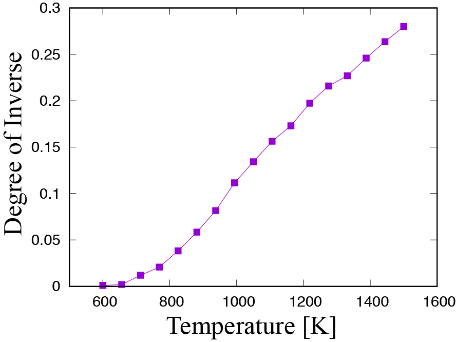

Example by using VASP¶
Preparing the input files for abICS¶
The input file of abICS is input_vasp.toml .
Below, input_vasp.toml in examples/spinel is explained as an example.
Only the [sampling.solver] section is differnt from that of QuantumESPRESSO.
The [sampling.solver] section is specified as follows:
[sampling.solver]
type = 'vasp'
path = './vasp'
base_input_dir = './baseinput'
perturb = 0.0
run_scheme = 'mpi_spawn_ready'
This examples sets type as vasp in order to use VASP.
path specifies the path to vasp.
The directory that contains the input parameter files specific to each solver is given as ./baseinput using base_input_dir.
perturb is a random parameter that shifts atomic positions for structural optimization, but in this example it is set to 0 not to perform structural optimization.
abICS starts vasp with MPI_Comm_spawn, so give mpi_spawn_ready as run_scheme .To use VASP as a solver, a patch must be applied to use MPI_COMM_SPAWN. If you wish to use it, please contact us (the e-mail address is written in Contacts .
Preparing the input file of VASP¶
abICS generates the input files of the solver from the internal atomic structure, but information other than the structure, such as pseudopotential information, must be supplied by the user.
In the case of VASP, such information is specified by INCAR, POSCAR, KPOINTS and POTCAR in base_input_dir. Here, POTCAR file is not contained in the base_input_dir due to the VASP license. Before the calculation, generate POTCAR file from the O, Al, Mg pesudo potential files.
Based on these files, an input file with unit cells and atomic structure is automatically generated.
Notes
The coordinate information of
POSCARwill be overwritten by the input information of abICS, but it must be described.In
POTCARfile, please list pseudo potentials in alphabetical order of atoms.
Execution and analysis¶
The procedures of execution and analysis are same as those of QE. If you do with 17 replicas and 1000 steps same as the exapmle of QE, the following result will be obtained
{kind=link}
You can see that DOI increases as the temperature increases.